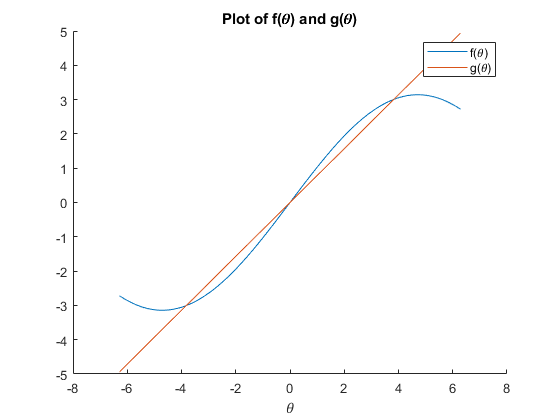
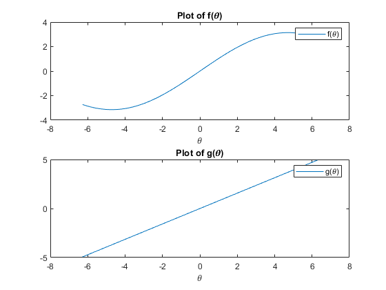
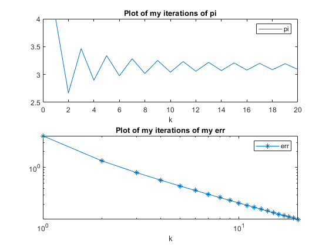

<!DOCTYPE html
  PUBLIC "-//W3C//DTD HTML 4.01 Transitional//EN">
<html><head>
      <meta http-equiv="Content-Type" content="text/html; charset=utf-8">
   <!--
This HTML was auto-generated from MATLAB code.
To make changes, update the MATLAB code and republish this document.
      --><title>Lab1</title><meta name="generator" content="MATLAB 9.12"><link rel="schema.DC" href="http://purl.org/dc/elements/1.1/"><meta name="DC.date" content="2022-04-05"><meta name="DC.source" content="Lab1.m"><style type="text/css">
html,body,div,span,applet,object,iframe,h1,h2,h3,h4,h5,h6,p,blockquote,pre,a,abbr,acronym,address,big,cite,code,del,dfn,em,font,img,ins,kbd,q,s,samp,small,strike,strong,tt,var,b,u,i,center,dl,dt,dd,ol,ul,li,fieldset,form,label,legend,table,caption,tbody,tfoot,thead,tr,th,td{margin:0;padding:0;border:0;outline:0;font-size:100%;vertical-align:baseline;background:transparent}body{line-height:1}ol,ul{list-style:none}blockquote,q{quotes:none}blockquote:before,blockquote:after,q:before,q:after{content:'';content:none}:focus{outine:0}ins{text-decoration:none}del{text-decoration:line-through}table{border-collapse:collapse;border-spacing:0}

html { min-height:100%; margin-bottom:1px; }
html body { height:100%; margin:0px; font-family:Arial, Helvetica, sans-serif; font-size:10px; color:#000; line-height:140%; background:#fff none; overflow-y:scroll; }
html body td { vertical-align:top; text-align:left; }

h1 { padding:0px; margin:0px 0px 25px; font-family:Arial, Helvetica, sans-serif; font-size:1.5em; color:#d55000; line-height:100%; font-weight:normal; }
h2 { padding:0px; margin:0px 0px 8px; font-family:Arial, Helvetica, sans-serif; font-size:1.2em; color:#000; font-weight:bold; line-height:140%; border-bottom:1px solid #d6d4d4; display:block; }
h3 { padding:0px; margin:0px 0px 5px; font-family:Arial, Helvetica, sans-serif; font-size:1.1em; color:#000; font-weight:bold; line-height:140%; }

a { color:#005fce; text-decoration:none; }
a:hover { color:#005fce; text-decoration:underline; }
a:visited { color:#004aa0; text-decoration:none; }

p { padding:0px; margin:0px 0px 20px; }
img { padding:0px; margin:0px 0px 20px; border:none; }
p img, pre img, tt img, li img, h1 img, h2 img { margin-bottom:0px; }

ul { padding:0px; margin:0px 0px 20px 23px; list-style:square; }
ul li { padding:0px; margin:0px 0px 7px 0px; }
ul li ul { padding:5px 0px 0px; margin:0px 0px 7px 23px; }
ul li ol li { list-style:decimal; }
ol { padding:0px; margin:0px 0px 20px 0px; list-style:decimal; }
ol li { padding:0px; margin:0px 0px 7px 23px; list-style-type:decimal; }
ol li ol { padding:5px 0px 0px; margin:0px 0px 7px 0px; }
ol li ol li { list-style-type:lower-alpha; }
ol li ul { padding-top:7px; }
ol li ul li { list-style:square; }

.content { font-size:1.2em; line-height:140%; padding: 20px; }

pre, code { font-size:12px; }
tt { font-size: 1.2em; }
pre { margin:0px 0px 20px; }
pre.codeinput { padding:10px; border:1px solid #d3d3d3; background:#f7f7f7; }
pre.codeoutput { padding:10px 11px; margin:0px 0px 20px; color:#4c4c4c; }
pre.error { color:red; }

@media print { pre.codeinput, pre.codeoutput { word-wrap:break-word; width:100%; } }

span.keyword { color:#0000FF }
span.comment { color:#228B22 }
span.string { color:#A020F0 }
span.untermstring { color:#B20000 }
span.syscmd { color:#B28C00 }
span.typesection { color:#A0522D }

.footer { width:auto; padding:10px 0px; margin:25px 0px 0px; border-top:1px dotted #878787; font-size:0.8em; line-height:140%; font-style:italic; color:#878787; text-align:left; float:none; }
.footer p { margin:0px; }
.footer a { color:#878787; }
.footer a:hover { color:#878787; text-decoration:underline; }
.footer a:visited { color:#878787; }

table th { padding:7px 5px; text-align:left; vertical-align:middle; border: 1px solid #d6d4d4; font-weight:bold; }
table td { padding:7px 5px; text-align:left; vertical-align:top; border:1px solid #d6d4d4; }


  </style></head><body><div class="content"><h2>Contents</h2><div><ul><li><a href="#2">Section 0 - set initial state to a known one</a></li><li><a href="#3">Section 1 - f and g of theta</a></li><li><a href="#4">Section 2 - create vector x</a></li><li><a href="#5">Section 3 - compute average</a></li><li><a href="#6">Section 4 - compute pi</a></li></ul></div><pre class="codeinput"><span class="comment">% Lab 1 - Aero 300 - Joshua Oates</span>
<span class="comment">%{
</span><span class="comment">Complete the following problems with a single script and custom functions as appropriate. Important lines
</span><span class="comment">of code should include descriptive comments. You are encouraged to work in groups, however the code
</span><span class="comment">you  submit  must  be  your  own.  All  graphs/figures/sketches  should  include  a  grid,  labels,  legend  (if
</span><span class="comment">necessary), and the appropriate fontsize/linewidth/markersize.
</span><span class="comment">
</span><span class="comment">1. Create two plots which display the functions ()=sin(/3) and ()=/4 between &#8722;2 and 2 that
</span><span class="comment">    is  uniformly spaced  with 130  elements. One  plot  should have  both functions  plotted  over
</span><span class="comment">    the same axes and the other should be a figure with two subplots.
</span><span class="comment">
</span><span class="comment">2. Create  a  vector  named    of  100,000  elements  that  are  uniformly  spaced  between  0-10.  Pre-
</span><span class="comment">    allocate  two  vectors  (r1,  r2)  with zeroes.  Construct  a for  loop to  calculate  1 =4^3 &#8722;2^2 &#8722;1.
</span><span class="comment">    Also,  calculate  2 =4^3 &#8722;2^2 &#8722;1,  but  use  just  one  line  of  code  (no  for  loop).    Time  (use
</span><span class="comment">    tic/toc)  how  long  it  takes  to calculate  each of  the  two  methods. Display  the  timed  results  in
</span><span class="comment">    the command line and discuss the differences.
</span><span class="comment">
</span><span class="comment">3. Compute the average for a list of 600 numbers by calling a function that can calculate the average
</span><span class="comment">    of any size array of random numbers.  Use the rand command to calculate which numbers to
</span><span class="comment">    use (try &#8216;help  rand&#8217; for more information on that command).  Use a for loop to find the
</span><span class="comment">    average.    MATLAB  has  an  average  command  so  you  can  check  your  answers.    Display  your
</span><span class="comment">    averaged value and MATLAB&#8217;s averaged value
</span><span class="comment">
</span><span class="comment">4. Calculate  (Eq. 1) using a while loop to a tolerance of 10^&#8722;5. Display the final calculated value of
</span><span class="comment">    pi and the number of iteration steps. Create a subplot, where the top axes show the approximated
</span><span class="comment">    value  for  pi  over  the  first  20  iterations,  and  the  lower  axes  show  the  absolute  value  of  the
</span><span class="comment">    approximated error for all iterations. Use log axes as appropriate.
</span><span class="comment">   &#8734;
</span><span class="comment">=4&#8721;(&#8722;1)^(k+1)/(2k-1)
</span><span class="comment">  k=1
</span><span class="comment">
</span><span class="comment">%}</span>
</pre><h2 id="2">Section 0 - set initial state to a known one</h2><pre class="codeinput">clear <span class="string">all</span>;
close <span class="string">all</span>;
clc;
</pre><h2 id="3">Section 1 - f and g of theta</h2><pre class="codeinput"><span class="comment">% generate a vector that will be the input space.</span>
theta = linspace(-2*pi, 2*pi , 130);
f = pi * sin( theta/ 3 );
g = pi * ( theta/ 4 );

<span class="comment">% create Figure 1</span>
figure;

<span class="comment">% populate it with single plot of g and f</span>
hold <span class="string">on</span>;
plot (theta, f);
plot (theta, g);

<span class="comment">% lables</span>
title(<span class="string">"Plot of f() and g()"</span>);
xlabel(<span class="string">""</span>);
legend(<span class="string">"f()"</span>,<span class="string">"g()"</span>);


<span class="comment">% create Figure 2</span>
figure;

<span class="comment">% populate it with one plot of g and one of f</span>
hold <span class="string">off</span>;
subplot (2,1,1);

<span class="comment">%plot and label f</span>
plot (theta, f);
title(<span class="string">"Plot of f()"</span>);
xlabel(<span class="string">""</span>);
legend(<span class="string">"f()"</span>);

subplot (2,1,2);

<span class="comment">%plot and label g</span>
plot (theta, g);
title(<span class="string">"Plot of g()"</span>);
xlabel(<span class="string">""</span>);
legend(<span class="string">"g()"</span>);

clear <span class="string">theta</span> <span class="string">f</span> <span class="string">g</span>
</pre>  <h2 id="4">Section 2 - create vector x</h2><pre class="codeinput"><span class="comment">% create x and empty output arrays</span>

x = linspace (0,10,100000);
r1 = zeros(1,length(x));
r2 = zeros(1,length(x));

<span class="comment">% for loop 4x^3 - 2x^2 - 1</span>
tic
<span class="keyword">for</span> i = 1:1:length(x)
    r1(i) = 4* (x(i))^3 - 2* (x(i))^2 - 1;
<span class="keyword">end</span>
t1 = toc;


<span class="comment">% vector math</span>
tic
r2 = 4* x.^3 - 2* x.^2 - 1;
t2 = toc;

<span class="comment">% print output</span>
disp (<span class="string">"section 2"</span>)
disp (<span class="string">"to generate r1, using for loop, it took     "</span>+ t1 + <span class="string">" seconds"</span>)
disp (<span class="string">"to generate r2, using vector math, it took  "</span>+ t2 + <span class="string">" seconds"</span>)
disp(<span class="string">"it took significantly longer to run the for loop calculation than the"</span>)
disp(<span class="string">"vector calculation, in my tests it was aproximately 6 times longer to"</span>)
disp(<span class="string">"calulate r1 than r2. My guess is that while the for loop runs on the cpu,"</span>)
disp(<span class="string">"the vector math in matlab may offload work to the gpu"</span>)
disp(<span class="string">" "</span>)

clear <span class="string">i</span> <span class="string">r1</span> <span class="string">r2</span> <span class="string">t1</span> <span class="string">t2</span> <span class="string">x</span>;
</pre><pre class="codeoutput">section 2
to generate r1, using for loop, it took     0.01171 seconds
to generate r2, using vector math, it took  0.0018864 seconds
it took significantly longer to run the for loop calculation than the
vector calculation, in my tests it was aproximately 6 times longer to
calulate r1 than r2. My guess is that while the for loop runs on the cpu,
the vector math in matlab may offload work to the gpu
 
</pre><h2 id="5">Section 3 - compute average</h2><pre class="codeinput"><span class="comment">% create array to average</span>
x = rand(1,600);
r1 = JoshAvg(x);
r2 = average(x);

<span class="comment">% output the results</span>
disp(<span class="string">"section 3"</span>)
disp(<span class="string">"the average as calculated by my function is          "</span>+num2str(r1,<span class="string">'%.15f'</span>))
disp(<span class="string">"the average as calculated by the Matlab function is  "</span>+num2str(r2,<span class="string">'%.15f'</span>))
disp(<span class="string">"the difference is "</span>+ (r2-r1))
disp(<span class="string">" "</span>)

clear <span class="string">x</span> <span class="string">r1</span> <span class="string">r2</span>;
</pre><pre class="codeoutput">section 3
the average as calculated by my function is          0.510762618741575
the average as calculated by the Matlab function is  0.510762618741575
the difference is 0
 
</pre><h2 id="6">Section 4 - compute pi</h2><pre class="codeinput"><span class="comment">% 4*((-1)^(k+1)/(2*k-1)); k = k +1; p = p + ans</span>
<span class="comment">% ^loop this for pi</span>

<span class="comment">% set k, the first term in the converging series the err to something high</span>
<span class="comment">% and the tolerance</span>

k = 1;
p(1) = 0;
err(1) = 4;
tol = 10^-5;

<span class="comment">% while the err is too large continue summing the series and calculate the</span>
<span class="comment">% err</span>
<span class="keyword">while</span> err(k) &gt;= tol
    rep = 4*((-1)^(k+1)/(2*k-1));
    k = k +1;
    p(k) = p(k-1) + rep;
    err(k) = abs(p(k) - p(k-1));
<span class="keyword">end</span>


<span class="comment">% output information about my pi</span>
disp(<span class="string">"section 4"</span>)
s = <span class="string">"I found pi to be                       "</span>;
s = s + num2str(p(k),<span class="string">'%.15f'</span>); <span class="comment">% formatSpec specifies 15 decimals of perscision as a float</span>
s = s + <span class="string">"  with an err of "</span>;
s = s + num2str(err(k),<span class="string">'%.6e'</span>); <span class="comment">% formatSpec specifies 15 decimals of perscision in scientific notation</span>
s = s + <span class="string">" in "</span>;
s = s + num2str(k);
s = s + <span class="string">" iterations."</span>;
disp(s);

clear <span class="string">s</span>


<span class="comment">% output information about built in pi</span>
s = <span class="string">"MatLab has a built in value for pi of  "</span>;
s = s + num2str(pi,<span class="string">'%.15f'</span>);
s = s + <span class="string">"  which is "</span>;
s = s + num2str(abs(pi-p(k)),<span class="string">'%.6e'</span>);
s = s + <span class="string">" different from my value of pi."</span>;
disp(s);

<span class="comment">% output the graphs</span>
<span class="comment">% set up the figure and plots</span>
figure;
hold <span class="string">off</span>;
subplot (2,1,1);

<span class="comment">% plot and label pi</span>
out = 0;
<span class="keyword">for</span> i=1:1:20
    out(i) = p(i+1);
<span class="keyword">end</span>
i=1:1:20;
plot (i, out);
title(<span class="string">"Plot of my iterations of pi"</span>);
xlabel(<span class="string">"k"</span>);
legend(<span class="string">"pi"</span>);

clear <span class="string">i</span> <span class="string">out</span>;

<span class="comment">% move to other subplot</span>
subplot (2,1,2);

<span class="comment">% plot and label err</span>
out = 0;
<span class="keyword">for</span> i=1:1:20
    out(i) = err(i+1);
<span class="keyword">end</span>
i=1:1:20;

plot (i, out, <span class="string">'-*'</span>);
set(gca, <span class="string">'YScale'</span>, <span class="string">'log'</span>)
set(gca, <span class="string">'XScale'</span>, <span class="string">'log'</span>)
title(<span class="string">"Plot of my iterations of my err"</span>);
xlabel(<span class="string">"k"</span>);
legend(<span class="string">"err"</span>);
</pre><pre class="codeoutput">section 4
I found pi to be                       3.141597653564762  with an err of 9.999975e-06 in 200002 iterations.
MatLab has a built in value for pi of  3.141592653589793  which is 4.999975e-06 different from my value of pi.
</pre> <p class="footer"><br><a href="https://www.mathworks.com/products/matlab/">Published with MATLAB&reg; R2022a</a><br></p></div><!--
##### SOURCE BEGIN #####
% Lab 1 - Aero 300 - Joshua Oates
%{
Complete the following problems with a single script and custom functions as appropriate. Important lines 
of code should include descriptive comments. You are encouraged to work in groups, however the code 
you  submit  must  be  your  own.  All  graphs/figures/sketches  should  include  a  grid,  labels,  legend  (if 
necessary), and the appropriate fontsize/linewidth/markersize. 

1. Create two plots which display the functions ()=sin(/3) and ()=/4 between −2 and 2 that 
    is  uniformly spaced  with 130  elements. One  plot  should have  both functions  plotted  over 
    the same axes and the other should be a figure with two subplots. 

2. Create  a  vector  named    of  100,000  elements  that  are  uniformly  spaced  between  0-10.  Pre-
    allocate  two  vectors  (r1,  r2)  with zeroes.  Construct  a for  loop to  calculate  1 =4^3 −2^2 −1. 
    Also,  calculate  2 =4^3 −2^2 −1,  but  use  just  one  line  of  code  (no  for  loop).    Time  (use 
    tic/toc)  how  long  it  takes  to calculate  each of  the  two  methods. Display  the  timed  results  in 
    the command line and discuss the differences. 

3. Compute the average for a list of 600 numbers by calling a function that can calculate the average 
    of any size array of random numbers.  Use the rand command to calculate which numbers to 
    use (try ‘help  rand’ for more information on that command).  Use a for loop to find the 
    average.    MATLAB  has  an  average  command  so  you  can  check  your  answers.    Display  your 
    averaged value and MATLAB’s averaged value 
    
4. Calculate  (Eq. 1) using a while loop to a tolerance of 10^−5. Display the final calculated value of 
    pi and the number of iteration steps. Create a subplot, where the top axes show the approximated 
    value  for  pi  over  the  first  20  iterations,  and  the  lower  axes  show  the  absolute  value  of  the 
    approximated error for all iterations. Use log axes as appropriate.
   ∞
=4∑(−1)^(k+1)/(2k-1)
  k=1
 
%}


%% Section 0 - set initial state to a known one
clear all;
close all;
clc;

%% Section 1 - f and g of theta

% generate a vector that will be the input space.
theta = linspace(-2*pi, 2*pi , 130);
f = pi * sin( theta/ 3 );
g = pi * ( theta/ 4 );

% create Figure 1
figure;

% populate it with single plot of g and f
hold on;
plot (theta, f);
plot (theta, g);

% lables
title("Plot of f() and g()");
xlabel("");
legend("f()","g()");


% create Figure 2
figure;

% populate it with one plot of g and one of f
hold off;
subplot (2,1,1);

%plot and label f
plot (theta, f);
title("Plot of f()");
xlabel("");
legend("f()");

subplot (2,1,2);

%plot and label g
plot (theta, g);
title("Plot of g()");
xlabel("");
legend("g()");

clear theta f g
%% Section 2 - create vector x

% create x and empty output arrays

x = linspace (0,10,100000);
r1 = zeros(1,length(x));
r2 = zeros(1,length(x));

% for loop 4x^3 - 2x^2 - 1
tic
for i = 1:1:length(x)
    r1(i) = 4* (x(i))^3 - 2* (x(i))^2 - 1;
end
t1 = toc;


% vector math
tic
r2 = 4* x.^3 - 2* x.^2 - 1;
t2 = toc;

% print output
disp ("section 2")
disp ("to generate r1, using for loop, it took     "+ t1 + " seconds")
disp ("to generate r2, using vector math, it took  "+ t2 + " seconds")
disp("it took significantly longer to run the for loop calculation than the")
disp("vector calculation, in my tests it was aproximately 6 times longer to")
disp("calulate r1 than r2. My guess is that while the for loop runs on the cpu,")
disp("the vector math in matlab may offload work to the gpu")
disp(" ")

clear i r1 r2 t1 t2 x;

%% Section 3 - compute average

% create array to average
x = rand(1,600);
r1 = JoshAvg(x);
r2 = average(x);

% output the results
disp("section 3")
disp("the average as calculated by my function is          "+num2str(r1,'%.15f'))
disp("the average as calculated by the Matlab function is  "+num2str(r2,'%.15f'))
disp("the difference is "+ (r2-r1))
disp(" ")

clear x r1 r2;

%% Section 4 - compute pi

% 4*((-1)^(k+1)/(2*k-1)); k = k +1; p = p + ans 
% ^loop this for pi 

% set k, the first term in the converging series the err to something high
% and the tolerance

k = 1;
p(1) = 0;
err(1) = 4;
tol = 10^-5;

% while the err is too large continue summing the series and calculate the
% err
while err(k) >= tol
    rep = 4*((-1)^(k+1)/(2*k-1));
    k = k +1;
    p(k) = p(k-1) + rep;
    err(k) = abs(p(k) - p(k-1));
end


% output information about my pi
disp("section 4")
s = "I found pi to be                       ";
s = s + num2str(p(k),'%.15f'); % formatSpec specifies 15 decimals of perscision as a float
s = s + "  with an err of ";
s = s + num2str(err(k),'%.6e'); % formatSpec specifies 15 decimals of perscision in scientific notation 
s = s + " in ";
s = s + num2str(k);
s = s + " iterations.";
disp(s);

clear s


% output information about built in pi
s = "MatLab has a built in value for pi of  ";
s = s + num2str(pi,'%.15f');
s = s + "  which is ";
s = s + num2str(abs(pi-p(k)),'%.6e');
s = s + " different from my value of pi.";
disp(s);

% output the graphs
% set up the figure and plots
figure;
hold off;
subplot (2,1,1);

% plot and label pi
out = 0;
for i=1:1:20
    out(i) = p(i+1);
end
i=1:1:20;
plot (i, out);
title("Plot of my iterations of pi");
xlabel("k");
legend("pi");

clear i out;

% move to other subplot
subplot (2,1,2);

% plot and label err
out = 0;
for i=1:1:20
    out(i) = err(i+1);
end
i=1:1:20;

plot (i, out, '-*');
set(gca, 'YScale', 'log')
set(gca, 'XScale', 'log')
title("Plot of my iterations of my err");
xlabel("k");
legend("err");


##### SOURCE END #####
--></body></html>